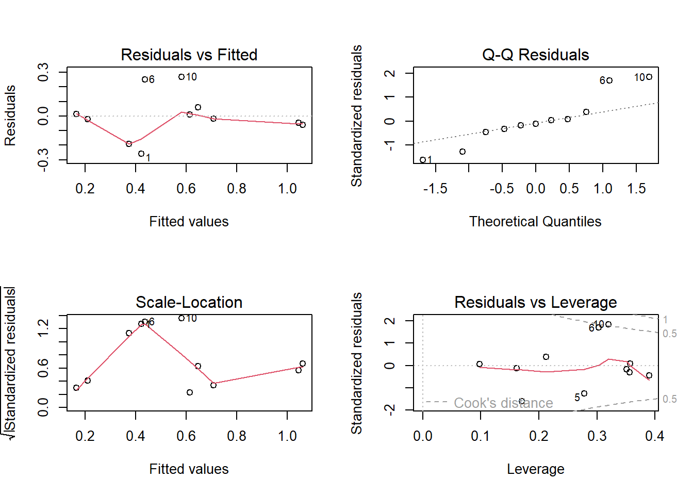

setwd("C:/Users/luisr/Documentos/Documents/Documentos - Copia/NanoIA/planilhas")
bacuriAcai <- read.csv("C:/Users/luisr/Documentos/Documents/Documentos - Copia/NanoIA/planilhas/NanoBacuriAcai.csv")
head(bacuriAcai) Bacuri Acai Brijo10 PDI Size
1 0.2500 0.2500 0.5000 0.163 737.00
2 0.1665 0.5000 0.3335 0.178 68.00
3 0.5000 0.1665 0.3335 1.000 590.00
4 0.3750 0.3750 0.2500 0.691 504.00
5 0.2500 0.5000 0.2500 0.183 223.00
6 0.2500 0.1665 0.5835 0.689 495.96library(mixexp)
bacuriAcaiVar <- c("Bacuri", "Acai", "Brijo10")
bacuriAcaiMod1 <- MixModel(bacuriAcai, "PDI", bacuriAcaiVar, 1)
coefficients Std.err t.value Prob
Bacuri 2.3444362 0.3393683 6.9082363 0.0001234984
Acai -0.3494541 0.2925435 -1.1945373 0.2664794382
Brijo10 -0.1542760 0.2489946 -0.6195955 0.5527573264
Residual standard error: 0.1759035 on 8 degrees of freedom
Corrected Multiple R-squared: 0.7779811summary(bacuriAcaiMod1)
Call:
lm(formula = mixmodnI, data = frame)
Residuals:
Min 1Q Median 3Q Max
-0.25933 -0.05386 -0.01884 0.03679 0.26824
Coefficients:
Estimate Std. Error t value Pr(>|t|)
Bacuri 2.3411 0.3402 6.881 0.000127 ***
Acai -0.3464 0.2933 -1.181 0.271561
Brijo10 -0.1527 0.2498 -0.611 0.557991
---
Signif. codes: 0 '***' 0.001 '**' 0.01 '*' 0.05 '.' 0.1 ' ' 1
Residual standard error: 0.1765 on 8 degrees of freedom
(4 observations deleted due to missingness)
Multiple R-squared: 0.9469, Adjusted R-squared: 0.927
F-statistic: 47.53 on 3 and 8 DF, p-value: 1.917e-05anova(bacuriAcaiMod1)Analysis of Variance Table
Response: PDI
Df Sum Sq Mean Sq F value Pr(>F)
Bacuri 1 4.3698 4.3698 140.2735 2.369e-06 ***
Acai 1 0.0608 0.0608 1.9530 0.1998
Brijo10 1 0.0116 0.0116 0.3736 0.5580
Residuals 8 0.2492 0.0312
---
Signif. codes: 0 '***' 0.001 '**' 0.01 '*' 0.05 '.' 0.1 ' ' 1bacuriAcaiMod2 <- MixModel(bacuriAcai, "PDI", bacuriAcaiVar, 2)
coefficients Std.err t.value Prob
Bacuri 2.626767 1.926203 1.3637026 0.2308471
Acai 1.770859 1.814958 0.9757023 0.3740229
Brijo10 1.836452 1.294917 1.4182004 0.2153368
Acai:Bacuri -1.941341 5.651068 -0.3435353 0.7451700
Brijo10:Bacuri -3.033517 5.654223 -0.5365047 0.6146111
Acai:Brijo10 -9.380093 5.023156 -1.8673706 0.1208210
Residual standard error: 0.1624006 on 5 degrees of freedom
Corrected Multiple R-squared: 0.8817241summary(bacuriAcaiMod2)
Call:
lm(formula = mixmodnI, data = frame)
Residuals:
1 2 3 4 5 6 7 8
-0.181194 0.136637 -0.031847 0.019448 -0.214092 0.098809 -0.008238 0.014454
9 10 11
-0.023389 0.047608 0.141769
Coefficients:
Estimate Std. Error t value Pr(>|t|)
Bacuri 2.661 1.946 1.367 0.230
Acai 1.789 1.819 0.984 0.370
Brijo10 1.874 1.310 1.430 0.212
Bacuri:Acai -1.991 5.669 -0.351 0.740
Bacuri:Brijo10 -3.176 5.735 -0.554 0.604
Acai:Brijo10 -9.468 5.041 -1.878 0.119
Residual standard error: 0.1623 on 5 degrees of freedom
(4 observations deleted due to missingness)
Multiple R-squared: 0.9719, Adjusted R-squared: 0.9383
F-statistic: 28.86 on 6 and 5 DF, p-value: 0.0009982anova(bacuriAcaiMod2)Analysis of Variance Table
Response: PDI
Df Sum Sq Mean Sq F value Pr(>F)
Bacuri 1 4.3698 4.3698 165.9243 5.022e-05 ***
Acai 1 0.0608 0.0608 2.3101 0.1890
Brijo10 1 0.0116 0.0116 0.4420 0.5356
Bacuri:Acai 1 0.0242 0.0242 0.9192 0.3817
Bacuri:Brijo10 1 0.0004 0.0004 0.0156 0.9055
Acai:Brijo10 1 0.0929 0.0929 3.5282 0.1191
Residuals 5 0.1317 0.0263
---
Signif. codes: 0 '***' 0.001 '**' 0.01 '*' 0.05 '.' 0.1 ' ' 1bacuriAcaiMod3 <- MixModel(bacuriAcai, "PDI", bacuriAcaiVar, 4)
coefficients Std.err t.value Prob
Bacuri -0.8965354 5.681882 -0.1577885 0.8822685
Acai -2.7173626 7.022726 -0.3869384 0.7185061
Brijo10 -1.2958274 4.909393 -0.2639486 0.8048602
Acai:Bacuri 17.8610008 30.394398 0.5876412 0.5883454
Brijo10:Bacuri 12.6512287 24.351797 0.5195193 0.6308221
Acai:Brijo10 9.3904784 28.743043 0.3267044 0.7602719
Acai:Brijo10:Bacuri -62.9117552 94.665135 -0.6645715 0.5426782
Residual standard error: 0.1723059 on 4 degrees of freedom
Corrected Multiple R-squared: 0.8934848summary(bacuriAcaiMod3)
Call:
lm(formula = mixmodnI, data = frame)
Residuals:
1 2 3 4 5 6 7 8
-0.190454 0.110310 -0.038921 0.004828 -0.143867 0.147084 0.015292 -0.027198
9 10 11
-0.038953 0.006436 0.155317
Coefficients:
Estimate Std. Error t value Pr(>|t|)
Bacuri -0.7489 5.6097 -0.134 0.900
Acai -2.5393 6.8963 -0.368 0.731
Brijo10 -1.1756 4.8671 -0.242 0.821
Bacuri:Acai 17.0567 29.7493 0.573 0.597
Bacuri:Brijo10 12.0270 24.0382 0.500 0.643
Acai:Brijo10 8.6632 28.2441 0.307 0.774
Bacuri:Acai:Brijo10 -60.4482 92.4533 -0.654 0.549
Residual standard error: 0.1725 on 4 degrees of freedom
(4 observations deleted due to missingness)
Multiple R-squared: 0.9746, Adjusted R-squared: 0.9303
F-statistic: 21.96 on 7 and 4 DF, p-value: 0.004853anova(bacuriAcaiMod3)Analysis of Variance Table
Response: PDI
Df Sum Sq Mean Sq F value Pr(>F)
Bacuri 1 4.3698 4.3698 146.9255 0.0002658 ***
Acai 1 0.0608 0.0608 2.0456 0.2258795
Brijo10 1 0.0116 0.0116 0.3914 0.5655066
Bacuri:Acai 1 0.0242 0.0242 0.8139 0.4179807
Bacuri:Brijo10 1 0.0004 0.0004 0.0138 0.9121475
Acai:Brijo10 1 0.0929 0.0929 3.1242 0.1518759
Bacuri:Acai:Brijo10 1 0.0127 0.0127 0.4275 0.5489068
Residuals 4 0.1190 0.0297
---
Signif. codes: 0 '***' 0.001 '**' 0.01 '*' 0.05 '.' 0.1 ' ' 1anova(bacuriAcaiMod1, bacuriAcaiMod2)Analysis of Variance Table
Model 1: PDI ~ -1 + Bacuri + Acai + Brijo10
Model 2: PDI ~ -1 + Bacuri + Acai + Brijo10 + Bacuri:Acai + Bacuri:Brijo10 +
Acai:Brijo10
Res.Df RSS Df Sum of Sq F Pr(>F)
1 8 0.24922
2 5 0.13168 3 0.11754 1.4876 0.3249anova(bacuriAcaiMod1, bacuriAcaiMod3)Analysis of Variance Table
Model 1: PDI ~ -1 + Bacuri + Acai + Brijo10
Model 2: PDI ~ -1 + Bacuri + Acai + Brijo10 + Bacuri:Acai + Bacuri:Brijo10 +
Acai:Brijo10 + Bacuri:Acai:Brijo10
Res.Df RSS Df Sum of Sq F Pr(>F)
1 8 0.24922
2 4 0.11897 4 0.13025 1.0948 0.4661summary(bacuriAcaiMod1)
Call:
lm(formula = mixmodnI, data = frame)
Residuals:
Min 1Q Median 3Q Max
-0.25933 -0.05386 -0.01884 0.03679 0.26824
Coefficients:
Estimate Std. Error t value Pr(>|t|)
Bacuri 2.3411 0.3402 6.881 0.000127 ***
Acai -0.3464 0.2933 -1.181 0.271561
Brijo10 -0.1527 0.2498 -0.611 0.557991
---
Signif. codes: 0 '***' 0.001 '**' 0.01 '*' 0.05 '.' 0.1 ' ' 1
Residual standard error: 0.1765 on 8 degrees of freedom
(4 observations deleted due to missingness)
Multiple R-squared: 0.9469, Adjusted R-squared: 0.927
F-statistic: 47.53 on 3 and 8 DF, p-value: 1.917e-05par(mfrow = c(2,2))
plot(bacuriAcaiMod1)